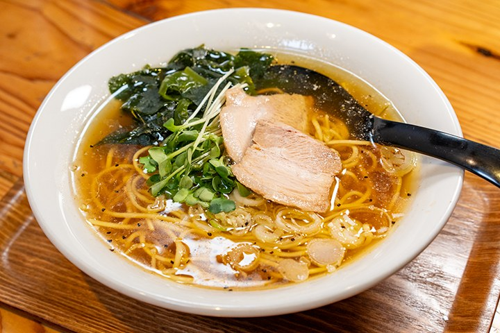

広告（PR）｜ふるさと納税

福岡県のラーメン店を市区別に、全28エリア・280店から厳選しました。各エリアの1位には、福岡市東区「麺や 佐渡友」（★4.3）、福岡市博多区「一蘭 本社総本店」（★4.2）、福岡市中央区「博多らーめんShinShin 天神本店」（★4.3）などが並びます。気になるエリアのページから、おすすめ順のランキングをご覧ください。
福岡市東区ラーメン10選
1位：麺や 佐渡友（★4.3／676件）
福岡市博多区ラーメン10選
1位：一蘭 本社総本店（★4.2／13,429件）
福岡市中央区ラーメン10選
1位：博多らーめんShinShin 天神本店（★4.3／8,017件）
福岡市南区ラーメン10選
1位：一九ラーメン 老司店（★4.2／1,674件）
福岡市城南区ラーメン10選
1位：らーめん へんちくりん（★4.6／334件）
福岡市西区ラーメン10選
1位：安全食堂（★4.2／1,697件）
福岡市早良区ラーメン10選
1位：ふくちゃんラーメン（★4.3／2,436件）
北九州市小倉南区ラーメン10選
1位：石田一龍 本店（★4.2／2,471件）
小倉北区・門司区ラーメン10選
1位：一蘭 小倉店（★4.1／2,584件）
若松区・戸畑区ラーメン10選
1位：くるめラーメン ぼたもち（★4.2／925件）
八幡東区・八幡西区ラーメン10選
1位：らーめん工房 龍（★4.2／914件）
久留米市ラーメン10選
1位：大砲ラーメン 本店（★4.3／3,863件）
大牟田市ラーメン10選
1位：福龍軒（★4.1／708件）
田川市ラーメン10選
1位：雲龍（★3.9／529件）
直方市ラーメン10選
1位：千成や（★4.0／747件）
行橋市・豊前市ラーメン10選
1位：黒豚とんこつ 金田家 行橋本店（★4.2／1,069件）
飯塚市・嘉麻市ラーメン10選
1位：石田 一龍 飯塚店（★4.2／732件）
糸島市ラーメン10選
1位：一蘭の森 糸島店（★4.0／2,304件）
那珂川市ラーメン10選
1位：本場の味 長崎亭 那珂川店（★3.8／794件）
太宰府市ラーメン10選
1位：ラーメン暖暮 太宰府駅前店（★3.9／1,678件）
宗像市ラーメン10選
1位：北のらー麺 らう家 宗像店（★4.0／593件）
中間市・宮若市ラーメン10選
1位：清湯豚骨ラーメン 来々軒（★3.8／723件）
筑後市・八女市ラーメン10選
1位：久留米源流ラーメン 大龍一番 八女本店（★4.1／716件）
小郡市・筑紫野市ラーメン10選
1位：麺屋我ガ 小郡本店（★4.1／2,268件）
福津市・古賀市ラーメン10選
1位：三味 古賀駅店（★4.6／2,263件）
春日市・大野城市ラーメン10選
1位：$nooup 春日店（★4.1／1,005件）
うきは市・朝倉市ラーメン10選
1位：らーめん 林家 甘木店（★4.1／886件）
柳川市・大川市・みやま市ラーメン10選
1位：久留米ラーメン清陽軒 ゆめモール柳川店（★3.6／628件）
選定基準｜おすすめ順の決め方
福岡県全体の順位は、次の方法で決めています。
- 算出方法：Googleマップの評価（★）を主軸に、口コミ件数と食べログの点数・口コミ数を加味した「おすすめ順」です。評価が高く、口コミの母数が多い店ほど上位になります。
- 実測日：掲載している評価・口コミ件数は、2026年11月3日にGoogleマップ・食べログで確認した実測値です。
- 順位と広告の関係：順位は広告・提携の有無とは一切関係ありません。本ページにはアフィリエイト広告（PR）が含まれますが、店舗の順位には影響しません。